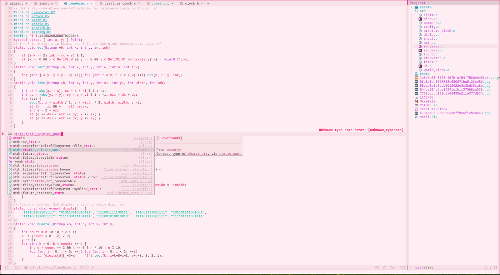
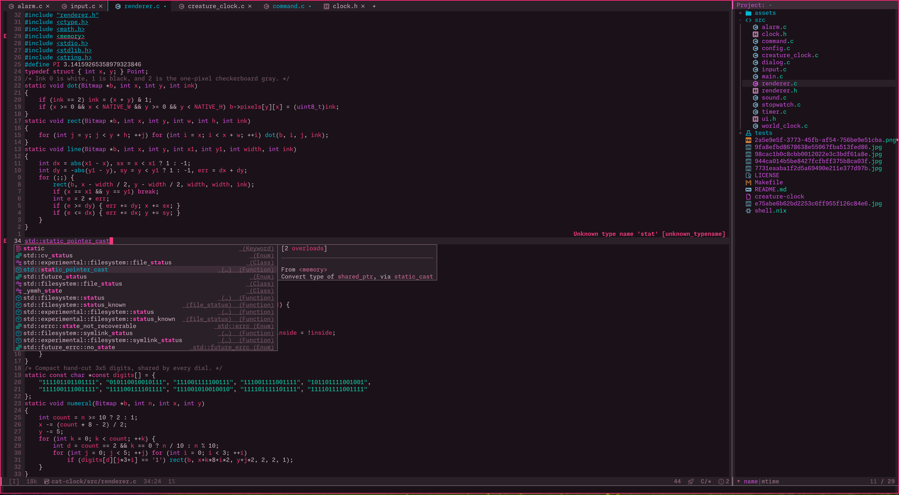

lot0x2c / projects
candyflip
candyflip is a pink and teal colour theme for Emacs, built on base16-theme. Source on GitHub.
I wanted a pink and teal theme for Emacs that comes as a light and dark pair with matching colors. base16-theme already generates the faces for hundreds of packages, so each theme here is only a palette of 16 colors plus a few overrides.
Two variants are included:
base16-candy— light: candy pink-white background, plum text.base16-acid— dark: dark plum background, pale pink text.




Status
Things that have already been implemented are:
- light theme (candy)
- dark theme (acid)
- 16 colors per theme, defined in one place
- faces generated by base16-theme
- region drawn with inverse-video, so it works with any foreground
- org-level-3 override in acid
- pink or teal accent
- low, normal and high contrast
- inverse or base02 region
- flat or boxed mode line
- transparent background in terminals
- bold, italic and underline per token type
M-x flipto switch between light and dark- no dependencies other than base16-theme
Palette
The palette is the point of the theme. Each variant is sixteen base16 slots; base16-theme maps them onto several hundred faces.
| slot | candy | acid | main use |
|---|---|---|---|
| base00 | #feedf3 | #1a1218 | default background |
| base01 | #f8e2e7 | #2a2028 | fringe, line numbers, hl-line, org blocks |
| base02 | #e0ccd1 | #3d2d38 | mode line, region (background style) |
| base03 | #816473 | #927885 | comments, line numbers, shadow |
| base04 | #745268 | #aa8e9b | doc strings, mode line text |
| base05 | #5c4250 | #d4b8c8 | default foreground |
| base06 | #463840 | #e8d0dc | inactive tabs, mode line emphasis |
| base07 | #352930 | #f5e8ef | brightest foreground |
| base08 | #d12362 | #f03878 | variables, errors, org TODO |
| base09 | #a45174 | #d47098 | constants, warnings, org title |
| base0A | #ae39bd | #d050e0 | types, org code and verbatim |
| base0B | #057b66 | #10d4b0 | strings, success, org DONE, buffer name |
| base0C | #007a6c | #00c8b0 | builtins, lazy-highlight, teal accent |
| base0D | #007888 | #00b8d4 | functions, preprocessor |
| base0E | #c5278a | #f848b8 | keywords, pink accent |
| base0F | #cb2762 | #db487b | long lines, rarely used extras |
The accent (candyflip-accent) recolours the cursor, links,
minibuffer prompt, isearch, paren match, current line number and active tab
with base0E or base0C.
Building the palette
The colours were picked by eye, then every text colour was pushed to at
least 4.5:1 contrast against its background, the WCAG 2 minimum for body
text. A colour is mixed toward black (candy) or white (acid) in 2%
steps until it passes. candyflip.el carries the same function,
so each value can be reproduced:
(candyflip--push "#d0a2b9" "#feedf3" "#000000" (lambda (r) (>= r 4.5))) ; #816473 comments, 1.95 -> 4.65 (candyflip--push "#ed286f" "#feedf3" "#000000" (lambda (r) (>= r 4.5))) ; #d12362 variables, 3.63 -> 4.51 (candyflip--push "#bf5e87" "#feedf3" "#000000" (lambda (r) (>= r 4.5))) ; #a45174 constants, 3.60 -> 4.65 (candyflip--push "#c13fd2" "#feedf3" "#000000" (lambda (r) (>= r 4.5))) ; #ae39bd types, 3.79 -> 4.52 (candyflip--push "#08c7a4" "#feedf3" "#000000" (lambda (r) (>= r 4.5))) ; #057b66 strings, 1.92 -> 4.62 (candyflip--push "#00b9a3" "#feedf3" "#000000" (lambda (r) (>= r 4.5))) ; #007a6c builtins, 2.20 -> 4.66 (candyflip--push "#00a2b8" "#feedf3" "#000000" (lambda (r) (>= r 4.5))) ; #007888 functions, 2.71 -> 4.61 (candyflip--push "#f030a8" "#feedf3" "#000000" (lambda (r) (>= r 4.5))) ; #c5278a keywords, 3.27 -> 4.62 (candyflip--push "#7a5a6a" "#1a1218" "#ffffff" (lambda (r) (>= r 4.5))) ; #927885 comments, 3.06 -> 4.59 (candyflip--push "#9a7888" "#1a1218" "#ffffff" (lambda (r) (>= r 6.0))) ; #aa8e9b doc text, 4.74 -> 6.17 (candyflip--push "#d83870" "#1a1218" "#ffffff" (lambda (r) (>= r 4.5))) ; #db487b base0F, 4.13 -> 4.57
The remaining acid colours already passed. candyflip-contrast runs the same function when a theme loads. high mixes away from
the background until each slot reaches a minimum; low mixes toward
the background until each slot is under a maximum; normal uses the
palette as it is.
| slots | low (at most) | high (at least) |
|---|---|---|
| base03 | 3.0 | 5.5 |
| base04 | 4.5 | 7.5 |
| base05 | 6.0 | 11.0 |
| base06 | 7.0 | 12.0 |
| base07 | 8.0 | 13.0 |
| base08–base0F | 4.5 | 6.0 |
In a terminal, base16-theme uses the terminal's own colours unless base16-theme-256-color-source is 'colors, so the
contrast levels only show in graphical frames or with that setting.
Installation
Needs Emacs 28.1+ and base16-theme 3.0+. Pick one method:
1. Load directly from a checkout
Clone the repository:
git clone https://github.com/lot0x2c/candyflip
Add it to your init.el:
(package-install 'base16-theme) (add-to-list 'custom-theme-load-path "/path/to/candyflip") (load-theme 'base16-candy t)
Or, with use-package:
(use-package base16-theme :ensure t) (use-package candyflip :load-path "/path/to/candyflip" :custom (candyflip-accent 'teal) :config (add-to-list 'custom-theme-load-path "/path/to/candyflip") (load-theme 'base16-candy t))
2. Doom Emacs
No clone needed. Add to packages.el:
(package! base16-theme)
(package! candyflip
:recipe (:host github :repo "lot0x2c/candyflip" :files ("*.el")))
Add to config.el:
(setq doom-theme 'base16-candy)
Then run:
doom sync
3. Copy into a theme directory
From a checkout, copy the three theme files:
make install PREFIX="$HOME/.emacs.d/themes"
Add that directory to custom-theme-load-path once.
base16-theme still has to be on load-path.
4. Install as an ELPA package
From a checkout, build and install the package:
make package make install-elpa
If your package directory is not ~/.emacs.d/elpa:
make install-elpa PACKAGE_USER_DIR="$HOME/.config/emacs/elpa"
Or install the built tarball from inside Emacs:
M-x package-install-file RET /path/to/candyflip/dist/candyflip-0.2.0.tar RET
This fetches base16-theme from MELPA if it is missing and makes both themes
available through load-theme. Re-run these after updating the
checkout.
Configuration
Configuration is done with a few variables, set before load-theme. You can make your config directly here: pick the
options, check the result in the candy and acid previews, then copy
the config under the options into your init.el (or Doom's config.el).
Changing an option later with setopt or M-x customize-group RET candyflip reloads the enabled theme, so the
change shows at once. Plain setq after loading needs a load-theme again. M-x flip switches between
candy and acid. The palette is stored in base16-candy-theme-colors and base16-acid-theme-colors at the top of each theme
file.
candyflip-accentcandyflip-contrastcandyflip-region-stylecandyflip-mode-line-stylecandyflip-transparent-backgroundcandyflip-formats| token | bold | italic | underline |
|---|---|---|---|
| keyword | |||
| string | |||
| function | |||
| type | |||
| constant | |||
| variable | |||
| builtin | |||
| comment | |||
| preprocessor | |||
| doc |
your config
type or paste your own code below
Usage
(load-theme 'base16-candy t) ; light (load-theme 'base16-acid t) ; dark
M-x flip (or M-x candyflip-toggle) switches between the two. M-x
disable-theme turns the current one off.
What is in the repository:
candyflip.el options, contrast math, face overrides, flip base16-candy-theme.el light theme and its palette base16-acid-theme.el dark theme and its palette candyflip-pkg.el ELPA package description Makefile check, install and package targets screenshots/ README images
Development
candyflip is actively developed. You can browse its source code repository or get a copy using git with the following command:
git clone https://github.com/lot0x2c/candyflip
make check # byte-compile with warnings as errors, then load both themes make package # build dist/candyflip-$VERSION.tar make clean # remove dist/ and *.elc
make check finds base16-theme through package.el. If it lives
elsewhere, for example in a straight or Doom checkout, point at it:
make check BASE16_DIR=~/.config/emacs/.local/straight/repos/base16-emacs
Download
- candyflip.el
- base16-candy-theme.el
- base16-acid-theme.el
- candyflip-main.tar.gz (whole repository)
candyflip is distributed under the MIT License. Faces are generated by base16-theme from the Tinted Theming project. Contrast ratios use the WCAG 2 relative luminance formula.